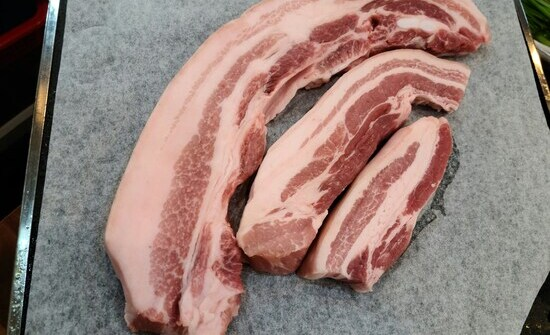

Как питаться правильно

1. Обязательно ешь мясо - свинину, говядину, баранину. Мясо содержит белок - главный строительный материал для всех клеток организма. Мясо - источник железа, витамина В12 и D3. Мясо необходимо для поддержания мышечной массы и укрепления костей. Мясо положительно влияет на работу головного мозга (улучшает память, внимание и мышление, профилактика болезни Альцгеймера), а также поддерживает работу щитовидной железы. Не стоит есть мясо фабричной курицы из-за высокого содержания химических веществ, гормонов роста и антибиотиков. Вегетарианство не подходит человеку, если он хочет быть здоровым.
2. Введи в рацион полезные насыщенные жиры - сливочное масло, топленое масло, говяжий жир, сало, кокосовое масло. Дело в том, что жиры входят в состав клеточных мембран, без них невозможна слаженная работа внутренних органов. Насыщенные жиры снижают уровень холестерина, улучшают работу сердечно-сосудистой системы, печени, легких и головного мозга. Убери жидкие растительные масла из семян (подсолнечник, соя, кукуруза), так как в них содержатся трансжиры. Не используй для жарки нерафинированные масла и масла с низкой точкой дымления (соевое, кукурузное, арахисовое, кунжутное и тыквенное), потому что при нагревании они выделяют канцерогены. Лучше готовить на топленом, кокосовом масле, масле авокадо, говяжьем или свином жире.
3. Убери сахар и сахаросодержащие продукты, которые вызывают воспаление в организме - основа рака, артрита, сердечно-сосудистых заболеваний, всех аутоиммунных заболеваний. Сократи употребление фруктозы (фруктового сахара). Фруктоза меняет метаболизм жиров, вызывая ожирение и инсулинорезистентность, а также разрушает печень. Лучше избегать экзотических фруктов (ананасы, бананы и пр.)
4. Исключи из рациона продукты из сои и кукурузы, так как они генно-модифицированные. Дело в том, что соя очень часто становится объектом экспериментов генетиков. Безопасность измененной еды не доказана, поэтому лучше избегать ее. Кроме того, соя нарушает гормональный фон организма. Именно в соевых продуктах высокое содержание эстрогенов. Эстрогеновая доминантность - это бич современного общества.
5. Сократи количество сырых овощей. Овощи полезнее есть в приготовленном виде - термически обработанные. Ученые выяснили, что сырые овощи уничтожают полезные бактерии в кишечнике, а термически обработанные, наоборот, действуют на микрофлору положительно. Также следует очищать от кожуры овощи и фрукты из-за накопления в ней вредных химических веществ - нитратов и пестицидов.
6. Сократи в своем рационе орехи. Дело в том, что в орехах могут присутствовать микотоксины - токсичные соединения, продукт жизнедеятельности некоторых плесневых грибов. Безопаснее всего лесные и кедровые орехи. Кроме того, полезно знать, что в миндале содержатся цианиды, употребление которых может привести к тяжелому отравлению.
7. Введи в рацион ферментированные продукты - квашеную капусту, малосольные огурцы, моченые яблоки, клюкву, бруснику. При хорошей переносимости лактозы добавь в рацион йогурт, сметану, сливки, кефир, творог, молодые сыры (адыгейский, брынза, сулугуни, фета, моцарелла, маскарпоне, буррата, страчателла).
8. Исключи из своего питания глютенсодержащую продукцию, хлебо-булочные изделия, цельное коровье молоко, полуфабрикаты, сахарозаменители, соки, а также мед (это сахар).
Интересно о полезных продуктах
Сало
1. Давайте разберемся с салом. О пользе и вреде этого неоднозначного продукта информации много. Начнем с истории возникновения. Родиной сала считается Италия. Именно в Римской империи в тосканском городке Каррара три тысячи лет назад свиным жиром кормили рабов, трудившихся на мраморных копях. Сало было дешевой и одновременно питательной едой. А жители близлежащего хутора Колонната даже использовали для засолки сала емкости, которые появлялись после выпиливания кусков мрамора. Сало называлось "лардо". Производство сала сохранилось, и с тех давних пор в Италии и Швейцарии сало является национальным продуктом.
В настоящее время сало распространено по всему миру. Англичане, например, предпочитают бекон - сало с прожилками мяса и соединительной ткани. В России бекон тоже является ценным продуктом. Кто же не любит яичницу с беконом?
2. Сало используют в пищу в свежем, копченом, соленом, вареном, тушеном и жареном виде. Сало с мясными прожилками называется "грудинка" или "бекон". Обжаренные кусочки сала называются "шкварки". Топленое сало называется "смалец" и используется как кулинарный жир.
3. Итак, в чем польза сала?
Сало содержит насыщенные и полиненасыщенные жирные кислоты. В частности, в сале много
арахидоновой кислоты, (Омега-6-ненасыщенная жирная кислота). Исследование, опубликованное в "Journal of the American Heart
Association" (2017), показало, что
такие полезные жиры могут помочь повысить уровень "хорошего" холестерина, что снижает риск развития сердечно-сосудистых заболеваний.
Жиры также важны для обмена веществ, работы мозга и состояния кожи. Согласно исследованию в "World Journal of Gastroenterology" (2016)
жиры в сале стимулируют выработку желудочного сока, что способствует улучшению пищеварения и лучшему усвоению питательных веществ. По
результатам исследований ВОЗ в странах, где не употребляют в пищу сало, чаще диагностируются геморрагические инсульты.
В сале содержатся
жирорастворимые витамины А, Е и Д, минеральные вещества - кальций, калий, фосфор, медь, селен, цинк, железо,
магний, натрий, марганец, алюминий, бор, бром, йод и др, а также витамины - В1, В2, В3, В4, В6, В8, В9, В12, В13, В15,
С, Н, РР и К. Благодаря такому богатому витаминно-минеральному составу и питательным свойствам сало стабилизирует уровень сахара в
крови и снижает тягу к сладкому. Витамин Д, например, играет важнейшую роль в здоровье костей, поддерживает иммунитет, помогает в усвоении
кальция, в выработке и регулировании уровня гормонов.
4. Когда сало может навредить?
С осторожностью использовать при желчнокаменной болезни, хронических заболеваниях
желудка и поджелудочной железы. Отказаться совсем следует при остром гастрите, колите, хронических запорах и холецистите.
Таким образом, соблюдай умеренность (15 - 20 г в день) и ешь сало с пользой для организма.
5. Традиционный метод засолки сала.
Положите кусок сала с кожей в емкость кожей вниз, засыпьте крупной солью из
расчета 60 г соли на килограмм сала и поставьте в холодильник на три дня. Затем достаньте сало и отряхните соль. Измельчите чеснок,
смешайте с мелкой солью и молотым черным перцем и этой смесью хорошо натрите кусок сала. Оберните сало чистым лоскутом белой ткани, потом
пергаментной бумагой и снова положите в холодильник. Через три дня сало будет готово. Лучше не хранить сало в морозилке, так как чеснок
не любит заморозку, и не стоит хранить долго. Приятного аппетита!
Куриные яйца
Известно, что яйца являются ценным продуктом питания с доисторических времен. Наиболее широко потребляемыми являются яйца домашней птицы, особенно кур. Курица, скорее всего, была одомашнена из-за яиц в Китае и Индии к 7000 г. до н.э. Куры были завезены в Шумер и Египет к 1500 году до нашей эры, а в Грецию попали около 800 года до нашей эры. Домашние куры ведут происхождение от единого предка - одного из подвидов дикого банкивского петуха, который населяет юго-запад Китая, север Таиланда и Мьянму.
Куриное яйцо является доступным источником белка и других питательных веществ. Причем, белок в яйце - это натуральный легкоусвояемый организмом человека протеин. Желток содержит жирорастворимые витамины, полиненасыщенные и мононенасыщенные жирные кислоты (линоленовую, олеиновую, пальмитиновую, стеариновую и миристиновую). Также в желтке много холина, больше, чем в любых других продуктах. Холин - это важнейший питательный элемент, относящийся к классу витаминоподобных веществ. Играет ключевую роль в обмене веществ, способствует профилактике жировой дистрофии печени, а именно является гепатопротектором - ускоряет восстановление поврежденных мембран клеток печени после токсического воздействия лекарств, алкоголя и вирусов. Также в желтке содержится жирообразное вещество лецитин, который выступает в роли антагониста холестерина, препятствуя его отложению на стенках сосудов. В желтке содержатся важнейшие витамины: А, В, В1, В2, В6, В9, В12, С, D, E, K, H, PP, а также множество макро и микроэлементов: натрий, фосфор, хром, магний, кальций. калий, железо и пр.
Важно упомянуть про холестерин, которого многие боятся, особенно те, у кого повышенный уровень холестерина в крови. В яичном желтке от природы содержится много холестерина (в среднем около 185 мг в желтке большого яйца). Однако, научные исследования доказали, что холестерин, содержащийся в яйцах, не откладывается на стенках сосудов, приводя к атеросклерозу. Тот самый "вредный" пищевой холестерин содержится в продуктах промышленной переработки: колбасных изделиях, сладкой выпечке, чипсах, сухариках и пр. Таким образом, куриные яйца без опаски можно назвать незаменимым продуктом в здоровом рационе человека.
Немного полезной информации о первой в России органической ферме полного цикла - Ферме М2. Ферма расположена в
экологически чистом районе Подмосковья. Органическое хозяйство построено на 5500 ГА залежных земель, которые не обрабатывались на протяжении
десятилетий. Почва разработана без использования пестицидов, синтетических удобрений и ГМО. В 2018 году Ферма М2 получила органический
сертификат на земли от немецкой аккредитованной компании Kiwa. На территории Фермы построен собственный завод, где производятся корма,
соответствующие органическому стандарту.
Так вот, на Ферме М2 живут куры несушки породы Хайсекс (коричневые и белые) и бройлеры породы
Кобб. Инкубационное яйцо для получения цыплят бройлеров закупается в Голландии, Чехии и Словакии. Далее бройлеры выводятся в собственном
инкубаторе. Птицы содержатся в просторном курятнике с доступом к свободному выгулу и органическому корму собственного производства. Основные
составляющие корма - ячмень, пшеница, кукуруза, соя полножирная, рыбная мука. В теплое время года птицы имеют доступ к сочной траве, жукам и
червякам в качестве подкормки. Для несушки очень важно большое содержание кальция, так как его очень много расходуется на снесение яиц. Такие
яйца содержат больше жиров, витаминов и минералов. Ежедневное количество яиц на Ферме М2 - 4000 штук. Также на Ферме М2 содержатся
индейки и перепелки. Кстати, куриные яйца с Фермы М2 всегда в продаже в магазине Будни, ул.Красная, 3-5.
Квашеная капуста
История происхождения квашеной капусты. Появилась в 3 веке до нашей эры в Древнем Китае. Этот простой продукт был незаменимым в рационе рабочих, строивших Великую китайскую стену. Только китайцы квасили местную капусту пак-чой и пекинскую, а в качестве рассола использовали белое вино. В Европу капусту завезли греческие поселенцы в 9 веке. На Руси капуста появилась в 10 веке. Выращивать капусту стали повсеместно и примерно в то же время научились ее квасить.
Квашеная капуста - это суперполезный высоковитаминный ферментированный продукт. Считается национальным продуктом во многих странах Европы и Азии. Это универсальный продукт, в составе которого много витаминов и микроэлементов. Регулярное употребление квашеной капусты благотворно влияет на все системы организма. Кроме того, квашеная капуста считается диетическим продуктом. В 100 г капусты содержится всего 23 ккал. Также в 100 г капусты содержится суточная норма пробиотиков, необходимых для организма человека. Пробиотики снижают симптомы синдрома раздраженного кишечника (уменьшают боль, дискомфорт и диспепсию).
Итак, о полезных свойствах квашеной капусты:
- Важно отметить, что при приготовлении капуста подвергается ферментации, в ходе которой микроорганизмы разрушают сахара с образованием органических кислот и углекислого газа. Именно в процессе ферментации создаются благоприятные условия для роста и размножения полезных бактерий, которые положительно влияют на микробиом кишечника. Поэтому квашеная капуста помогает развивать дружественное человеку бактериальное разнообразие в кишечнике.
- В квашеной капусте много витаминов - витамины С, К, А, Е, В4, В6, В9.
Кто же не знает, что квашеная капуста - это, в первую очередь, источник витамина С? Это мощный природный антиоксидант, который противостоит свободным радикалам, останавливая процессы окисления в организме. В 200 г квашеной капусты содержится суточная норма витамина С для взрослого человека.
Благодаря наличию витаминов группы В квашеная капуста оказывает благотворное влияние на нервную систему.
Витамин К участвует в производстве белков, регулирующих минерализацию костей. - Квашеная капуста богата кальцием, магнием, натрием, фосфором, железом, цинком, тиамином.
Квашеная капуста восполняет дефицит железа в организме. Помогает справляться с анемией благодаря большому содержанию железа. Причем именно бактерии, содержащиеся в самой капусте, способствуют лучшему усвоению железа в организме.
Содержащиеся в квашеной капусте фосфор, калий, марганец и магний делают кости прочными. Таким образом, квашеная капуста - это идеальный продукт для здоровья костей. - Кстати, несколько видов квашеной капусты без лишних добавок, а также кимчи (ферментированную пекинскую капусту) можно приобрести в магазине здоровых продуктов Будни.